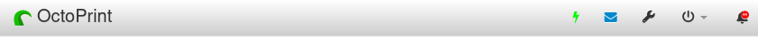

Controle de l'alimentation de l'imprimante 3D
Pour améliorer le contrôle de l'alimentation de l'imprimante 3D, un système a ete mis en place afin de pouvoir aussi alllumer ou eteindre l'imprimante a distance.
Matériel utilisé
- Relais : Un relais pour contrôler l'alimentation électrique de l'imprimante.
- Raspberry Pi : Utilisé pour piloter le relais et exécuter le plugin Octoprint.
- Câbles jumper : Pour les connexions électriques entre le Raspberry Pi et le relais.
Mise en œuvre
Connexion du relais
-
Raccordement électrique : Connectez le relais à une source d'alimentation et à l'imprimante 3D. Le relais sera intercalé entre la prise de courant et l'imprimante.
-
Connexions avec le Raspberry Pi :
- Connectez le VCC du relais au pin 5V du Raspberry Pi.
- Connectez le GND du relais au pin GND du Raspberry Pi.
- Connectez l’IN du relais à un pin GPIO disponible sur le Raspberry Pi (par exemple GPIO 02 dans notre cas).
Configuration du plugin PSU Control
- Installation du plugin
- Ouvrez Octoprint et allez dans le gestionnaire de plugins.
-
Recherchez et installez le plugin PSU Control.
-
Configuration du plugin
- Accédez aux paramètres du plugin PSU Control.
- Configurez le plugin pour utiliser le GPIO que vous avez connecté au relais (par exemple GPIO 02 dans notre cas).
- Définissez les paramètres pour contrôler l'alimentation (par exemple, les délais de mise sous/hors tension).
Test du système
- Allumez le Raspberry Pi et démarrez Octoprint.
- Dans Octoprint, utilisez l'icone en forme d'eclair du plugin PSU Control pour activer et désactiver le relais. 
- Vérifiez que l’imprimante s’allume et s’éteint en conséquence.
NB: Si PSU Control est configuré pour que l'imprimante soit éteinte au démarrage, vous pourriez rencontrer certaines anomalies. En effet, tant que le câble d'alimentation du Raspberry Pi est connecté à l'imprimante, le panneau de commande de cette dernière peut sembler allumé alors qu'elle ne l'est pas réellement. Cela devient évident lorsque vous tentez d'effectuer des manipulations sur l'imprimante : rien ne fonctionne, ni les moteurs, ni aucune autre fonction.
Il est donc essentiel, après avoir accédé à la page d'Octoprint, d'allumer l'imprimante en cliquant sur l'icône en forme d'éclair.
En revanche, si vous configurez PSU Control pour que l'imprimante soit allumée au démarrage, vous éviterez ce problème. Toutefois, il est important de penser à éteindre l'imprimante après utilisation pour économiser de l'électricité. Par ailleurs, vous serez confronté à un problème visuel. En effet, l'icône en forme d'éclair sera grisée, semblant inactive lorsque l'imprimante est allumée, et éclairée lorsqu'elle est éteinte, ce qui peut prêter à confusion.